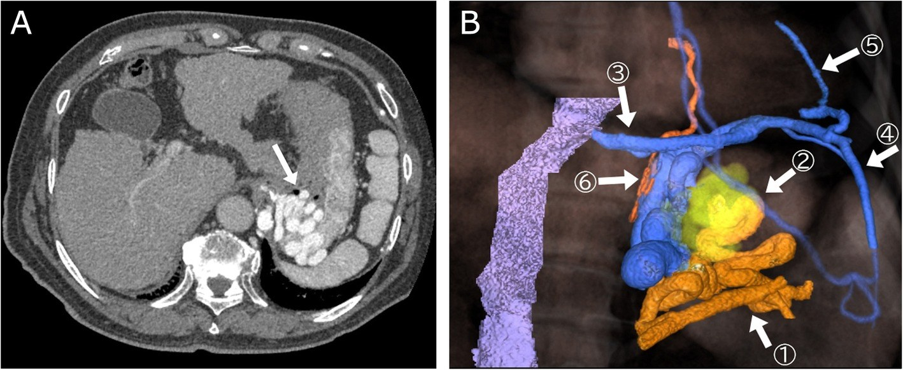
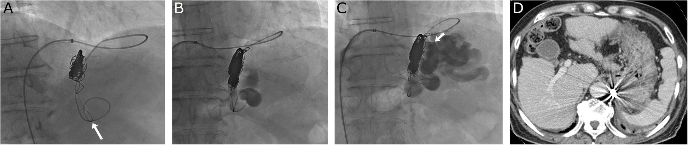
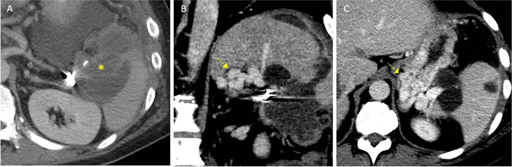

181 — BRTO/RTO: thuyên tắc NGƯỢC dòng tĩnh mạch thận trái cho giãn tĩnh mạch dạ dày / Balloon-occluded retrograde transvenous obliteration
Tags: pattern:gian-tinh-mach vung:da-day vung:mach-cua score:Kiyosue protocol:DSA-BRTV
Mức chắc chắn (certainty): tổng hợp y văn (literature synthesis) — tổng hợp từ bài tổng quan mở + 2 cohort/báo ca có ảnh gốc (Interv Radiol 2026 PMC13086557; BMC Med Imaging 2010 PMC2820437; CVIR Endovasc 2020 PMC7293971; CVIR Endovasc 2024 PMC11283442; CVIR Endovasc 2025 PMC12696224; World J Gastrointest Pathophysiol 2026 PMC13598455).
Câu hỏi gốc của bài: bệnh nhân xơ gan có giãn tĩnh mạch đáy vị (gastric varices — GV) vừa chảy máu (hoặc có chỉ định dự phòng) — khi nào đi đường NGƯỢC qua shunt dạ dày–thận (BRTO), khi nào TIPS hay keo/chích nội soi, và trên phim CT/DSA phải trả lời 3 câu nào trước khi quyết định? Điểm tựa: GV khác giãn tĩnh mạch thực quản ở chỗ máu thoát ra theo một ống lớn (shunt cửa–chủ). BRTO bịt đầu ra rồi bơm chất xơ hóa ngược vào túi giãn — nghĩa là "chữa bằng cách khóa cửa thoát", ngược hoàn toàn với TIPS ("mở van xả"). Hiểu đúng chiều dòng là hiểu cả chỉ định, kỹ thuật và biến chứng.
1. Tổng quan bệnh học – cơ chế hình ảnh
A. Vì sao GV khác giãn thực quản (và vì sao chảy máu nguy hiểm hơn):
- GV gặp ở ~20% người tăng áp lực cửa. Theo Sarin: GOV1 ~70%, GOV2 ~21%, còn lại IGV1/IGV2 (PMC13086557). Nguy cơ chảy máu cao nhất là IGV1, sau đó GOV2 — tức nhóm đáy vị đơn thuần, không kèm giãn thực quản.
- Vỡ GV có tử vong 25–55% vì lưu lượng lớn và khó cầm (PMC2820437) — cao hơn vỡ giãn thực quản trong nhiều báo cáo.
- TẠI SAO có shunt: tăng áp cửa làm mở các đường nối sẵn có. Đường thoát chính của GV: shunt dạ dày–thận (gastrorenal shunt — GRS) 80–85%, tĩnh mạch hoành dưới trái (LIPV) 10–15%, tĩnh mạch quanh tim (PCV) ~5%, đôi khi tĩnh mạch liên sườn (ICV) (PMC13086557). Chính ống thoát này là "cửa" để can thiệp ngược dòng.
B. Vì sao BRTO hiệu quả – vật lý và huyết động:
- Đưa bóng (balloon) vào GRS → bơm căng → chặn dòng ra, rồi bơm chất xơ hóa (sclerosant) ngược vào túi giãn. Thuốc lưu lại trong túi vì đã khóa cửa thoát → gây tổn thương nội mạc và huyết khối cả túi giãn LẪN ống shunt.
- Ngưỡng/kỹ thuật (theo bài gốc): ethanolamine oleate–iopamidol (EOI) 5%, tối đa 30 mL; giữ bóng 1–24 giờ sau bơm; có thể rút trong ngày nếu ổn định (PMC13086557). Chất xơ hóa tốt hơn gelatin sponge vì gelatin chỉ gây đông cơ học, còn sclerosant gây huyết khối cả các nhánh nhỏ — PARTO dùng gelfoam + STS cho tỷ lệ tái phát tiệm cận 0% (PMC13086557).
- Hiệu quả định lượng: thành công lâm sàng 97,3% (phân tích gộp); huyết khối hoàn toàn túi giãn trên CT ngày 90: 93,0% (40/43) (PMC13086557). Cohort 47 bệnh nhân: tỷ lệ không tái phát 90% ở 5 năm; tái phát chỉ xảy ra ở 2 ca còn shunt thông (8 ca shunt thông, 29 ca shunt đã tắc) (PMC2820437) → chốt là phải tắc được CẢ ống shunt, không chỉ túi giãn.
- So với chích keo (cyanoacrylate — CA): sống không tái xuất huyết 1 năm 96,3% (BRTO) vs 77% (CA), p = 0,004; BRTO ít nhập viện và rẻ hơn (PMC13086557).
- So với TIPS: phân tích gộp cho thấy BRTO ít tái xuất huyết hơn, ít bệnh não gan sau thủ thuật hơn và sống tốt hơn (PMC13086557); cohort so sánh chi phí: trung vị tổng chi phí AUD 3.632 (BRTO) vs AUD 11.922 (TIPS), chi phí để tránh 1 ca tái xuất huyết AUD 3.896 vs 14.803 (PMC12696224).
C. Cái giá phải trả – dồn áp lực về phía cửa:
- Bịt đường thoát → áp lực trong hệ cửa tăng lại → nặng thêm giãn thực quản, báng bụng (kể cả báng kháng trị), suy gan. Đây là lý do phải chọn bệnh nhân theo chức năng gan và độ xơ hóa: LSM (Fibroscan) ~22–25 kPa được xem là "điểm không thể quay lại" — trên ngưỡng này BRTO ít cải thiện chức năng gan và dễ làm nặng tăng áp cửa (PMC13086557).
- Hội chứng shunt cửa–chủ (portosystemic shunt syndrome — PSSS): shunt lớn gây suy gan tiến triển + bệnh não gan. CT/MRI phát hiện shunt cửa–chủ ở 60% bệnh nhân; có shunt là yếu tố độc lập cho tử vong/ghép gan (HR 1,26; 95%CI 1,06–1,49); PSSS giai đoạn cuối: sống 1 năm 42%, 3 năm 23% sau cơn bệnh não gan đầu tiên. BRTO chính là điều trị bịt shunt trong bối cảnh này (PMC13086557).
D. TẠI SAO ảnh trông như vậy:
- DSA: bóng cản quang nằm trong GRS; bơm thuốc ngược chiều thấy thuốc chảy vào túi giãn đáy vị (và các nhánh bàng hệ). Thuốc cản quang nặng hơn máu → tư thế bệnh nhân và hướng bơm quyết định thuốc có vào được túi giãn (kỹ thuật "oblique" của bài gốc, PMC13086557).
- CT sau BRTO: trong túi giãn là khối tăng đậm độ do EOI/keo + huyết khối — KHÔNG phải máu đang chảy; đừng đọc thành "xuất huyết tiêu hóa" hay "huyết khối tĩnh mạch cửa".
- 3D volume rendering từ CTAP (CT during arterial portography): dựng được nhánh nuôi (tĩnh mạch vị sau, vị ngắn) – túi giãn – nhánh thoát (LIPV/GRS); đây là bản đồ để chọn đường vào (PMC7293971).
2. Mẫu hình + chẩn đoán phân biệt theo vị trí (Gamut)
Gamut theo ĐƯỜNG THOÁT (Kiyosue — quyết định làm được BRTO hay không):
- Type 1 — một nhánh thoát duy nhất (thường GRS): điển hình nhất, BRTO chuẩn dễ thành công.
- Type 2 — nhiều nhánh thoát: phải bịt các nhánh phụ (coil/bóng) trước khi bơm sclerosant, nếu không thuốc trôi đi.
- Type 3 — vào gián tiếp qua mạng bàng hệ: khó, thường phải "hạ độ" (downgrading) bằng cách đẩy catheter sâu hơn hoặc bịt bàng hệ.
- Type D — KHÔNG có nhánh thoát lớn: không có đường ngược để làm BRTO → chuyển TIPS hoặc can thiệp trước–xuôi dòng (BATO/qua da xuyên lách).
Gamut theo VỊ TRÍ (Sarin — quyết định nguy cơ chảy máu):
- GOV1 (dọc bờ cong nhỏ, liên tục với giãn thực quản) — hay gặp nhất, thường xử lý như giãn thực quản (thắt/keo).
- GOV2 (qua tâm vị tới đáy vị) — nguy cơ cao, hay có GRS.
- IGV1 (đáy vị đơn thuần, không giãn thực quản) — nguy cơ chảy máu cao nhất, chỉ định BRTO rõ nhất.
- IGV2 (giãn lạc chỗ: tá tràng, ruột non, trực tràng) — BRTO vẫn dùng được nhưng giải phẫu mỗi ca một khác, phải cá thể hóa.
Gamut theo BỐI CẢNH (vì sao "đáy vị giãn" chưa chắc là GV xơ gan):
- Tăng áp cửa trái (sinistral/left-sided portal hypertension) do tắc tĩnh mạch lách (u đuôi tụy, viêm tụy mạn): GV đơn độc, KHÔNG xơ gan, không giãn thực quản, lách to. Điều trị có thể là cắt lách hoặc nút mạch keo xuyên lách khi không tiếp cận được shunt (PMC11283442).
- U/giả u đáy vị (ung thư biểu mô tuyến, GIST, nếp gấp dày) — cần nội soi trước khi gọi là GV.
- Giãn tĩnh mạch do huyết khối tĩnh mạch cửa (cavernoma) — BRTO vẫn làm được nhưng đường vào/shunt phức tạp hơn.
3. Bảng so sánh phân biệt (ma trận đối chiếu)
| Thực thể (entity) | Hình ảnh điển hình | Chốt vào (rule-in) | Chốt loại (rule-out) | Gợi ý xác nhận |
|---|---|---|---|---|
| GV có GRS — ứng viên BRTO chuẩn | CT thì cửa: túi giãn đáy vị + tĩnh mạch thận trái/GRS lớn; DSA: bóng trong GRS, thuốc vào túi giãn ngược dòng | Thấy rõ 1 nhánh thoát lớn đổ vào TM thận trái + BRTV (Hirota 1–2) làm đầy được túi giãn | Kiyosue type D (không nhánh thoát) → không có cửa vào ngược | CT 3 thì + 3D VR (PMC7293971); BRTV tại bàn chụp |
| GV thoát qua LIPV/PCV/ICV | Nhánh thoát đổ về TM hoành dưới trái/TM quanh tim/TM liên sườn, không qua TM thận | Thấy nhánh thoát "lạ" trên CT + venography xác nhận | Đường vào qua TM thận sẽ không tiếp cận được | Chọn đường vào khác (CARTO/xuyên lách) hoặc TIPS |
| Tăng áp cửa trái (do tắc TM lách) | GV đơn độc + lách to + tắc/không thấy TM lách, gan bình thường | Không xơ gan + không giãn thực quản + tắc TM lách có nguyên nhân (u đuôi tụy) | Có xơ gan + giãn thực quản → tăng áp cửa toàn hệ | CT bụng 3 thì; nút keo xuyên lách 21G khi không có shunt (PMC11283442) |
| Chích keo nội soi (cyanoacrylate) | Nội soi: túi giãn đáy vị; sau chích thấy keo cản quang trong túi | Cầm máu ngay được, làm được ở tuyến không có DSA | Tái xuất huyết 1 năm 23% (77% không tái) + nguy cơ keo trôi theo GRS | So sánh: BRTO 96,3% không tái ở 1 năm (PMC13086557) |
| TIPS | Stent nối TM gan–TM cửa, giảm PPG < 12 mmHg | Cần hạ áp cửa toàn hệ (báng kháng trị, giãn thực quản nặng) + shunt không làm BRTO được | Không có chỉ định hạ áp toàn hệ → làm TIPS chỉ thêm bệnh não gan | Đo PPG; xem bài 176 |
| PARTO / CARTO (biến thể BRTO) | Nút mạch bằng plug (PARTO) hoặc coil (CARTO) thay bóng; sau đó bơm sclerosant/gelfoam | Shunt lớn, bóng không giữ được, hoặc cần rút catheter sớm | Gelfoam đơn thuần → nguy cơ trôi → thuyên tắc phổi/TM cửa | Chụp kiểm tra kín shunt trước khi bơm (PMC7293971) |
| Hirota 3–4 (thuốc không vào túi giãn) | BRTV: bàng hệ lớn, thuốc chỉ đầy một phần/không đầy túi giãn | Bàng hệ lớn + túi giãn không đầy | Hirota 1–2 (đầy túi giãn) → bơm ngay được | "Hạ độ": đẩy catheter sâu, bịt bàng hệ, xoay tư thế (PMC13086557) |

Bản đồ trước can thiệp: (a) CT trong thì động mạch–cửa cho thấy túi giãn (mũi tên trắng); (b) dựng 3D tách riêng nhánh nuôi (tĩnh mạch vị sau, vị ngắn ①), túi giãn (②) và nhánh thoát (tĩnh mạch hoành dưới trái ③). Đây là hình mẫu để chọn đường vào BRTO. Nguồn: CVIR Endovasc 2020 (PMC7293971), CC BY 4.0.Ba câu hỏi phải trả lời trước khi bơm thuốc
- Đường thoát là gì? GRS (80–85%) → BRTO qua TM đùi/TM thận trái; LIPV/PCV/ICV → phải đổi đường vào.
- Bơm ngược có đầy túi giãn không (Hirota)? Không đầy → phải "hạ độ" hoặc đổi chiến lược, không được bơm mù (thuốc sẽ trôi vào tuần hoàn).
- Có shunt cửa–phổi (PPVA) không? Có shunt lớn → bịt chọn lọc trước, vì bọt/thuốc đi vào phổi gây nhồi máu phổi/nhồi máu não (PMC13086557).
4. Protocol chụp + phân độ & quyết định điều trị
- Trước can thiệp:
- Nội soi tiêu hóa trên xác nhận GV, phân loại Sarin, tìm dấu hiệu nguy cơ (thể nốt, đốm đỏ).
- CT bụng 3 thì (không cản quang – động mạch – cửa) lát 1–2 mm + dựng 3D: đo đường kính GRS/nhánh thoát, phát hiện shunt cửa–phổi, huyết khối cửa/lách, kích thước túi giãn.
- Xét nghiệm: công thức máu, đông máu, chức năng gan–thận; LSM/Fibroscan để ước lượng "điểm không thể quay lại" (~22–25 kPa).
- Trong can thiệp: tiếp cận TM đùi → TM thận trái → GRS; BRTV (balloon-occluded retrograde transvenous venography) phân độ Hirota 1–5; nếu cần thì hạ độ (đẩy catheter/coil bàng hệ); bơm EOI 5% ≤ 30 mL (hoặc STS/polidocanol), giữ bóng 1–24 giờ; chụp kiểm tra trước khi rút.
- Sau can thiệp: CT bụng có cản quang ~1 tuần và 1–3 tháng (đánh giá huyết khối túi giãn + shunt); nội soi lại 1–3 tháng rồi mỗi 6–12 tháng (theo dõi giãn thực quản nặng lên); theo dõi báng, bệnh não gan, hemoglobin niệu, đau bụng.
- Ba tình huống chống chỉ định / thận trọng (theo bài tổng quan): rối loạn đông máu nặng chưa điều chỉnh, huyết khối TM lách, huyết khối TM cửa, đang chảy máu giãn thực quản không kiểm soát; và đang chảy máu GV ồ ạt chưa cầm — vì BRTO bịt đường thoát làm tăng áp lực trong túi giãn, phải cầm máu tạm bằng nội soi/bóng chèn trước (PMC13086557).
flowchart TD
A[Giãn tĩnh mạch dạ dày có chỉ định điều trị] --> B{Đang chảy máu ồ ạt?}
B -->|Có| C[Cầm máu tạm: thắt/chích keo hoặc bóng chèn]
B -->|Không| D[CT 3 thì + dựng 3D: xác định nhánh thoát]
C --> D
D --> E{Nhánh thoát là GRS?}
E -->|Không: LIPV/PCV/ICV| F[Đổi đường vào: CARTO qua catheter lái được hoặc TIPS]
E -->|Có| G{BRTV: Hirota 1-2?}
G -->|Có| H[Bơm EOI 5% ≤ 30 mL, giữ bóng 1-24 giờ]
G -->|Không: 3-4| I[Hạ độ: đẩy catheter, coil bàng hệ]
I --> G
H --> J[CT 1 tuần + 1-3 tháng: túi giãn và shunt đã tắc?]
J -->|Shunt còn thông| K[Nguy cơ tái phát cao: can thiệp bổ sung]
J -->|Tắc hoàn toàn| L[Nội soi 1-3 tháng, theo dõi giãn thực quản và báng]
5. Biến thể bình thường và cạm bẫy
- Nếp gấp đáy vị dày / niêm mạc phù nề trên CT không cản quang dễ đọc thành "túi giãn" — luôn đối chiếu thì cửa + nội soi, và tìm nhánh thoát (không có nhánh thoát thì rất khó là GV đáng can thiệp).
- CT ngay sau BRTO: khối tăng đậm độ trong túi giãn là EOI/keo + huyết khối, không phải máu đang chảy; đừng gọi là "huyết khối tĩnh mạch cửa" nếu chất tăng đậm độ nằm trong thành dạ dày.
- Shunt cửa–phổi (PPVA): bơm thuốc/bọt khi có PPVA lớn → nhồi máu phổi, nhồi máu não. Luôn tìm trên CT trước và bịt chọn lọc.
- Gelfoam trôi: PARTO/GERTO dùng gelatin có thể trôi gây thuyên tắc phổi hoặc tắc TM cửa — ưu tiên plug/coil + sclerosant và kiểm tra kín shunt trước khi bơm.
- Tăng áp cửa trái không do xơ gan: GV đơn độc + tắc TM lách → đừng đi tìm "xơ gan", và cân nhắc cắt lách/nút keo xuyên lách thay vì BRTO (không có shunt lớn để đi ngược).
- "Thành công kỹ thuật" ≠ "thành công lâm sàng": CT ngày 90 còn shunt thông dù túi giãn đã xẹp → nguy cơ tái phát; cohort 47 ca cho thấy chỉ 2 ca tái phát, cả 2 đều còn shunt thông (PMC2820437).
- Đừng quên mặt cắt ngang: GV đáy vị nằm sát thượng thận trái/tụy đuôi — túi giãn lớn có thể bị đọc nhầm thành u thượng thận/nang tụy; dấu chốt là nối liền với TM thận trái/shunt và đậm độ thuốc đồng thì với tĩnh mạch.
6. Tự lượng giá — Blind Quiz ngay trên trang tĩnh
Ca 1 — Nam 79 tuổi, xơ gan Child–Pugh A, giãn tĩnh mạch dạ dày dai dẳng (đã chích xơ 4 năm trước), đang chờ mổ HCC.
- Gợi ý: nội soi: F3, Lg-CF, Cw; tiểu cầu 120.000/µL, INR 1,12.
- Câu hỏi: (1) Nhánh thoát chính là gì, có shunt dạ dày–thận không? (2) Vì sao không đặt được bóng theo kiểu BRTO chuẩn? (3) Chọn kỹ thuật nào?
Bấm để hiện đáp án (findings + chẩn đoán)
- Dấu hiệu: túi giãn đáy vị (a, mũi tên trắng). Dựng 3D: nhánh nuôi là tĩnh mạch vị sau + vị ngắn (①), túi giãn (②), nhánh thoát chính là tĩnh mạch hoành dưới trái (③); KHÔNG có shunt dạ dày–thận; các nhánh thoát khác: tĩnh mạch ngực trong trái (④), hoành–màng tim (⑤), tĩnh mạch phổi dưới trái (⑥).
- Chẩn đoán: GV thể Lg-CF (từ tâm vị tới đáy vị) thoát qua LIPV — đây là lý do không đi được đường TM thận trái như BRTO kinh điển.
- Vì sao bóng khó: hẹp nhẹ giữa TM chủ dưới và TM hoành dưới trái + góc shunt nhọn → không đưa/giữ được bóng. Đã chọn CARTO (coil + 5% EOI, tổng 24 mL) qua một đường vào duy nhất với catheter lái được.
- Nguồn ảnh: CVIR Endovasc 2020 (PMC7293971) Fig. 1, CC BY 4.0.
Ca 2 — Cùng bệnh nhân, trong lúc can thiệp và 1 tuần sau.

- Gợi ý: ca được làm bằng CARTO (coil + sclerosant) qua một đường vào duy nhất.
- Câu hỏi: (1) Vì sao phải bịt nhánh thoát trước khi bơm thuốc? (2) Trên ảnh D, chất tăng đậm độ trong thành dạ dày là gì? (3) Nếu bơm thuốc mà không thấy thuốc vào túi giãn thì xử trí?
Bấm để hiện đáp án (findings + chẩn đoán)
- Dấu hiệu: (A) catheter lái được lật ngược ra sau chỗ đặt coil (mũi tên trắng), coil rời được thả qua vi catheter 1,9 Fr; (B) coil bít kín nhánh thoát, TM hoành dưới trái không còn hiện hình; (C) bơm chậm EOI 5% (tổng 24 mL) làm đầy túi giãn và các nhánh nhỏ (mũi tên trắng); (D) CT 1 tuần sau CARTO: túi giãn đã tắc hoàn toàn (mũi tên trắng) — khối tăng đậm độ là EOI + huyết khối, không phải máu đang chảy.
- Vì sao bịt trước: nếu còn đường thoát, thuốc trôi vào tuần hoàn → mất tác dụng + nguy cơ thuyên tắc phổi/nhồi máu não (nhất là khi có PPVA).
- Không đầy túi giãn = Hirota 3–4 → "hạ độ" (đẩy catheter sâu, coil bàng hệ, đổi tư thế) rồi chụp lại; không bơm mù.
- Nguồn ảnh: CVIR Endovasc 2020 (PMC7293971) Fig. 2, CC BY 4.0.
Ca 3 — Nam 62 tuổi, đau bụng, sụt cân; nội soi thấy giãn đáy vị đơn độc, không giãn thực quản.

- Gợi ý: không có bằng chứng xơ gan; có coil từ can thiệp cũ.
- Câu hỏi: (1) Cơ chế tăng áp cửa ở ca này? (2) Vì sao BRTO qua TM thận không thực hiện được? (3) Phương án thay thế?
Bấm để hiện đáp án (findings + chẩn đoán)
- Dấu hiệu: (A) u đuôi tụy xâm lấn rốn lách (dấu sao) + coil cũ; (B–C) túi giãn đáy vị lớn (mũi tên).
- Chẩn đoán: tăng áp cửa trái (sinistral portal hypertension) do tắc tĩnh mạch lách — gan bình thường, GV đơn độc.
- Vì sao không BRTO: nhiều ca không có shunt dạ dày–thận để đi ngược; ca này venography qua đường thường không thấy thông nối với túi giãn → đã dùng chọc xuyên lách bằng kim 21G + bơm keo trực tiếp.
- Nguồn ảnh: CVIR Endovasc 2024 (PMC11283442) Fig. 1, CC BY 4.0.
Bài liên quan chéo
- 176 – TIPS/DIPS: chỉ định, kỹ thuật & theo dõi shunt
- 182 – Biến chứng sớm sau TIPS: thủng bao gan, hemobilia, endotipsitis
- 149 – Tăng áp cửa KHÔNG do xơ gan (PSVD/NCPF, sán máng)
- 146 – Huyết khối tĩnh mạch lách & nhồi máu lách
- 100 – Tổng quan hệ Bụng
Không dùng để chẩn đoán độc lập khi chưa có người hướng dẫn.